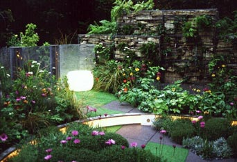
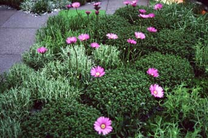
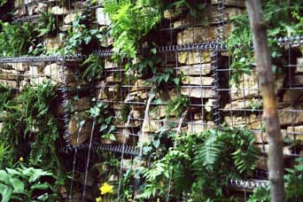
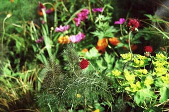

Philip took part in the 2002 RHS Chelsea Flower Show, with a garden in the ‘chic’ category called Flow Glow. Generously sponsored by A-Z Restaurants (Aubergine, L'Oranger, Rosmarino, Spiga, Zafferano etc) the garden's brief was to be “bold and controversial” and to incorporate new ideas, modern materials and imaginative design.
The concept challenged the convention that contemporary (‘chic’) design had to be hard-edged or minimal. In contrast, Flow Glow used curves and flowing lines incorporating unusual materials — rubber flooring, a perspex pool, neon lighting (many gardens are used as evening entertaining spaces) and dry stone walling in metal gabions.




The garden also featured two illuminated Boo! stools which doubled as tables and a stylish ferro-concrete sculpture from New Zealand.

The lush planting incorporated ferns (Polystichum setiferum and Asplenium trichomanes) in the wall and the bold use of oranges and purples such as Geum 'Borisii', Euphorbia palustris, Geranium psilostemon, Gladiolus communis, Osteospermum 'Stardust', Papaver rupifragm 'Double Tangerine Gem' and Trollius x cultorum 'Orange Princess'.

The dry-stone wall was built in three days — relatively easily as the stone blocks were contained in the metal gabions which gave structure and support to the wall. Five copper pipes were included so water could trickle into the pool below.

